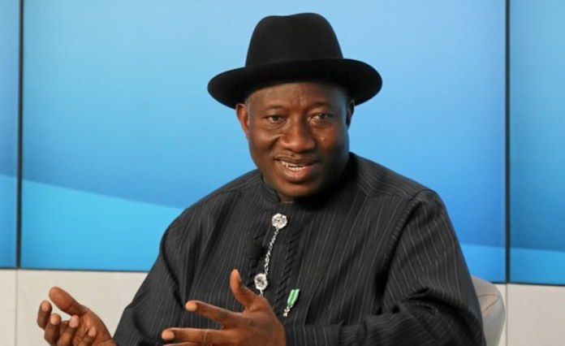

The GEJ Grassroots Volunteers for Development (GEJ-GVD) is a nationalorganization that is keenly promoting good governance, virile/inclusivedemocracy and sustainable development in Nigeria and across the globe. Itcame into being on the 7th December, 2013 and was formally commendedand endorsed at Otuoke, Bayelsa State by Hon. Patrick Obah the PersonalAssistant to the President on Special Projects for the mobilization of themasses in the country for the re-election of Dr. Goodluck Ebele Jonathan,GCFR as 2nd term President of the Federal Republic of Nigeria from 29th May,2015.
Our organization originated from Calabar, Cross River State, Nigeria throughthe vision of like-minded persons who believes that the right of franchise ofthe people must be represented and upheld among other FundamentalHuman Rights (FHR) and holds the conviction that this body can enhancehuman dignity and development while encouraging people to assert theirrights and vote for justice, fair-play and equity in their activities.